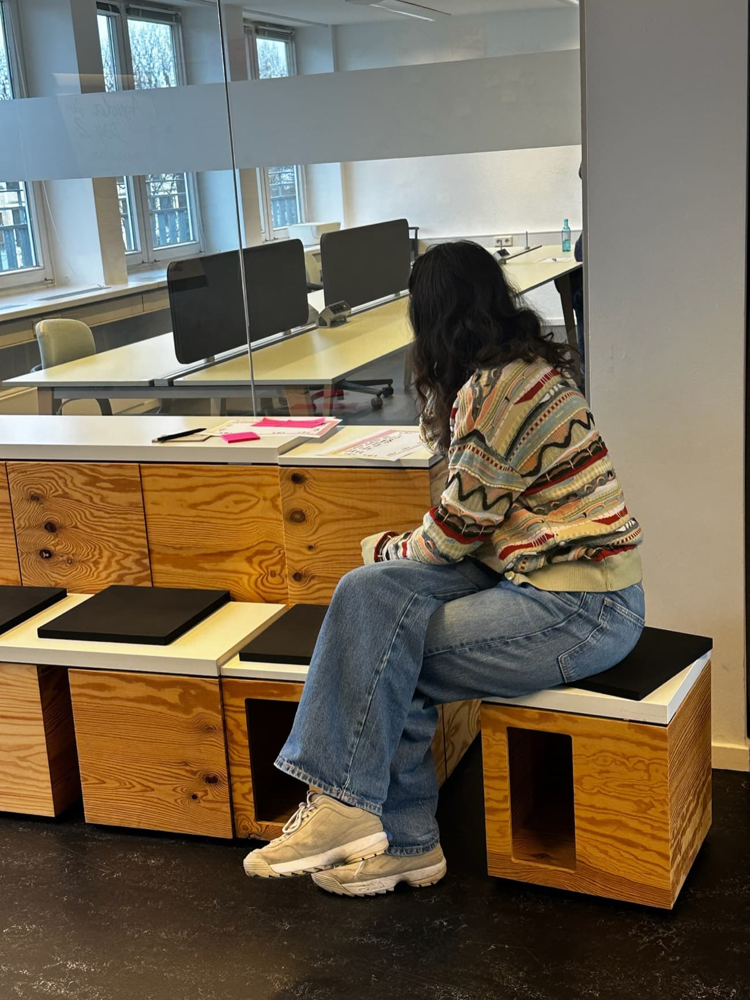
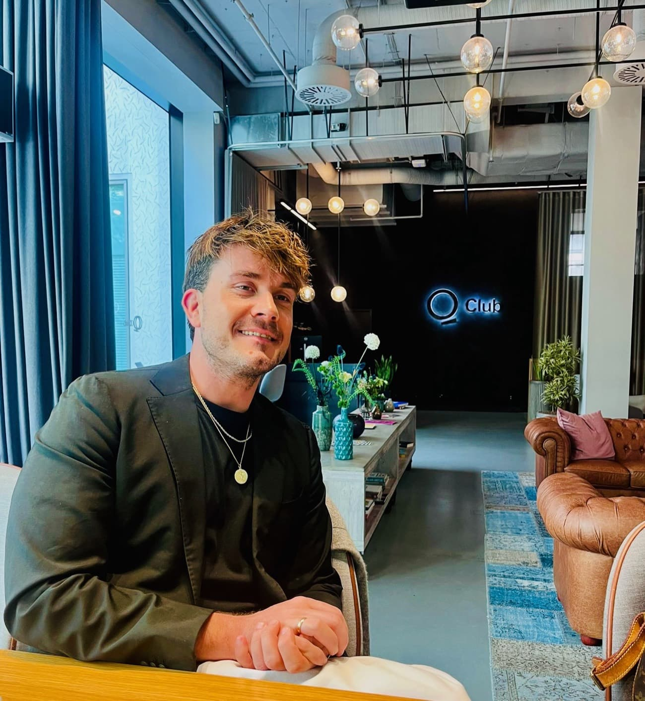

Von ungleicher Projektarbeit zu gemeinsamen Standards: Wie ein Unternehmen klassisches und agiles Projektmanagement in der gesamten Organisation verankert hat, von der Führung bis ins Team.
Ausgangslage
Ein Unternehmen wollte seine gesamte Belegschaft handlungsfähiger in der Projektarbeit machen. Projekte gab es viele, aber sie liefen ungleich: ohne gemeinsame Sprache, ohne einheitliche Methoden, mit unklaren Rollen. Zugleich veränderten Digitalisierung und KI, wie Projekte heute ablaufen. Gesucht war kein einmaliges Training für wenige, sondern der Aufbau von Projektkompetenz in der Breite, klassisch wie agil.
Vorgehen
Wir haben zwei aufeinander abgestimmte Trainings entwickelt und ausgerollt:
- Das klassische Projektmanagement vermittelt die Grundlagen: den Dreiklang aus Ziel, Zeit und Ressourcen, Phasenplanung, klare Rollen und Statusberichte, dazu stärkenbasiertes Arbeiten im Team.
- Das agile Training legt den Fokus auf digitales und KI-gestütztes Projektmanagement und auf Arbeitsweisen, die mit Unsicherheit und schnellen Veränderungen umgehen.
- Begonnen haben wir bewusst mit den Führungskräften, damit sie das neue Vorgehen verstehen und mittragen. Anschließend haben wir die Trainings auf die gesamte Organisation ausgerollt, durchgängig praxisnah und an echten Projekten.

Eine gemeinsame Sprache und einheitliche Standards für Projektarbeit, von der Führung bis ins Team.
Ergebnis
Heute verfügt die Organisation über eine gemeinsame Sprache und einheitliche Standards für Projektarbeit, von der Führung bis ins Team. Weil der Rollout oben begonnen hat und alle erreicht, ist das neue Vorgehen breit verankert und bleibt nicht in einzelnen Köpfen.
